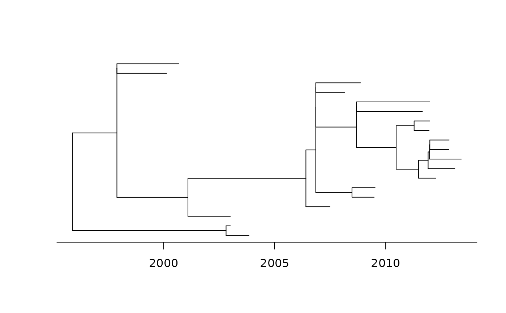
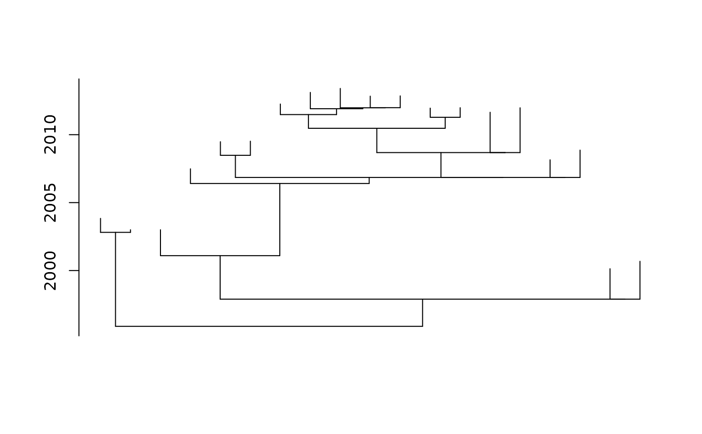
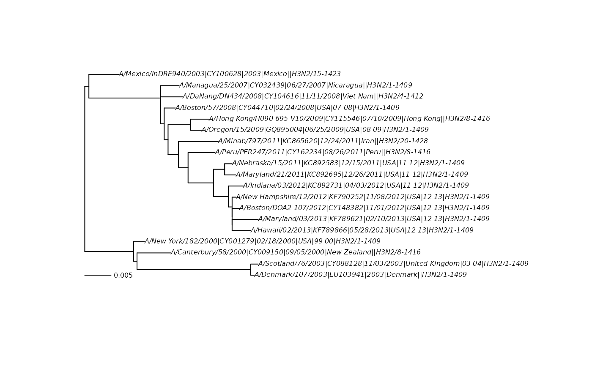

plot.pml is a wrapper around plot.phylo with different default
values for unrooted, ultrametric and tip dated phylogenies.
Usage
# S3 method for class 'pml'
plot(x, type = "phylogram", direction = "rightwards", ...)Arguments
- x
an object of class
pmlorphyDat.- type
a character string specifying the type of phylogeny to be drawn; it must be one of "phylogram" (the default), "cladogram", "fan", "unrooted", "radial", "tidy", or any unambiguous abbreviation of these.
- direction
a character string specifying the direction of the tree. Four values are possible: "rightwards" (the default), "leftwards", "upwards", and "downwards".
- ...
further parameters to be passed to
plot.phylo.
Value
plot.pml returns invisibly a list with arguments dexcribing the plot.
For further details see the plot.phylo.
Author
Klaus Schliep klaus.schliep@gmail.com
Examples
fdir <- system.file("extdata/trees", package = "phangorn")
tmp <- read.csv(file.path(fdir,"H3N2_NA_20.csv"))
H3N2 <- read.phyDat(file.path(fdir,"H3N2_NA_20.fasta"), format="fasta")
dates <- setNames(tmp$numdate_given, tmp$name)
fit_td <- pml_bb(H3N2, model="JC", method="tipdated", tip.dates=dates,
rearrangement="none", control = pml.control(trace = 0))
plot(fit_td, show.tip.label = FALSE)

# Same as:
# root_time <- max(dates) - max(node.depth.edgelength(fit_td$tree))
# plot(fit_td$tree, show.tip.label = FALSE)
# axisPhylo(root.time = root_time, backward = FALSE)
plot(fit_td, show.tip.label = FALSE, direction="up")

fit_unrooted <- pml_bb(H3N2, model="JC", rearrangement="none",
control = pml.control(trace = 0))
plot(fit_unrooted, cex=.5)
